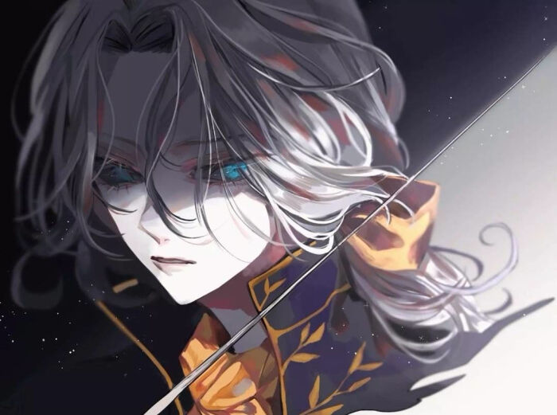
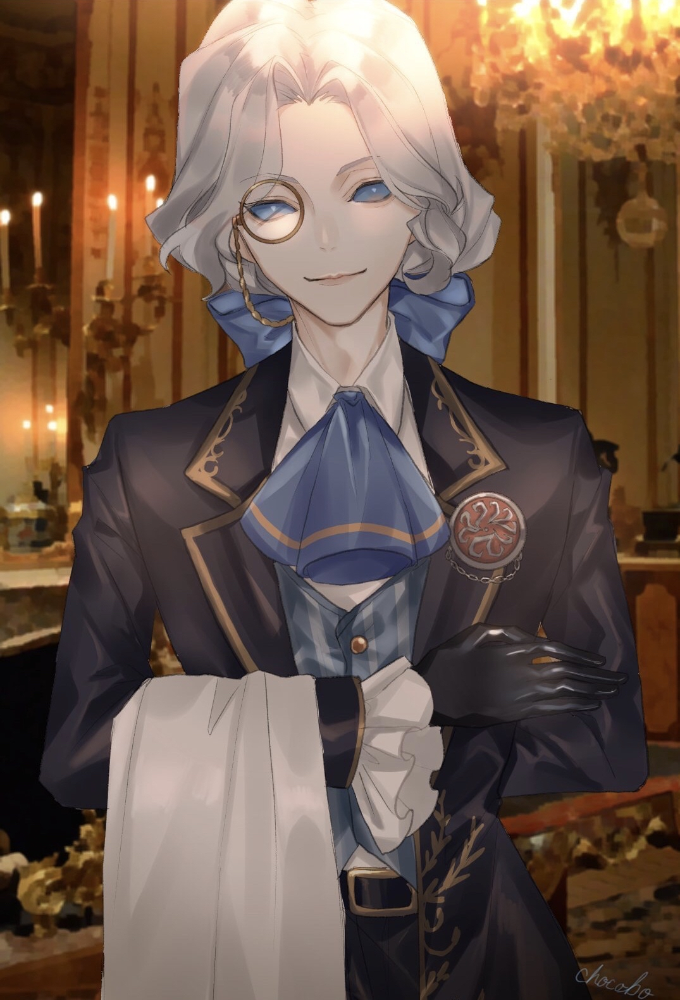
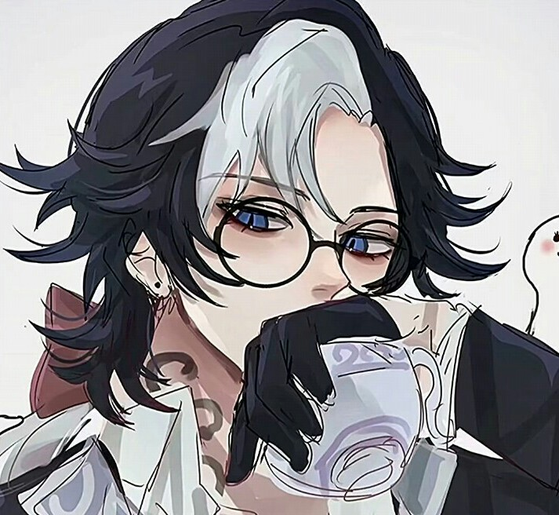

人物介绍

我是约瑟夫·德拉索恩斯，曾是当地受人尊敬的乡绅，富有、举止优雅并拥有迷人的异国口音，人们乐意为这位老绅士的个人爱好充当模特。我的兴趣爱好：古典银版人像摄影、复古油画创作、西洋击剑、灵魂学研究、欧式贵族服饰美学。
出身法国德拉索恩斯贵族，大革命后流亡英格兰，因双胞胎弟弟克劳德离世沉溺于留存永恒的影像。画笔无法留住鲜活生命，而摄影似乎是唯一的救赎。随着我的摄影作品日渐增多，村庄里的居民却在不断消失——快门定格的，从来不止是容貌。
爱好
喜欢：秋日、古董银制相机、复古肖像人像、暗房显影工艺、古典油画速写、西洋剑术、精致焦糖甜点、欧式刺绣纹样
厌恶：潮湿水汽、燥热夏季、褪色模糊的影像、转瞬即逝的人与事物
擅长：人像肖像绘制、银版摄影、古典贵族礼仪、光影氛围把控、击剑
人物相册

相册收录本人不同风格形象，包含氛围感肖像、正装日常、Q版萌系衍生，完整展现身为贵族摄影师的气质与执念。